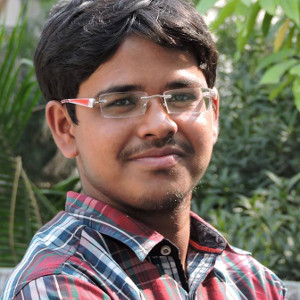

The journey of life came on June 3rd ,1996. That was the day my parents blessed me with the name Sujoy Kansabanik.
The path my life has taken so far has been a steady one with very few times that I've gone off course. I look at my life as a gift and try my hardest not to take it for granted. The years I have spent on this earth have been more than amazing and I imagine they are more than I could have ever asked for. I spend the majority of my time with the ones I love most, like my family and closest friends.
They are the ones that keep my head on straight and help me succeed at the goals I set for myself. If it weren't for the people who love me the most and the fortunate home I have grown up in I don't know where in the world I would be today.
As I said before, I spend most of my hours with my family and closest friends. My friends are my backbone and my family is my strength and wisdom. There are three friends in my life that I spend every waking moment with. They are my best friends and they are the ones that help me in hard times and hold me up when I need the extra support. That is why I consider them my 'backbone'.
It's obvious that my family and friends mean more than anything to me but there are other things in my life that I have a deep passion for. These things include mathematics, computer-science, and statistics and my ambition to succeed in life.I like to code and web-design.I participate in different coding competitions in Code-cheff and Hackerrank.I read Computer Science in Jadavpur University and I aspire to become a good programmer.
That's my life in a nut-shell but if you want to know more about the real me continue on throughout this website!